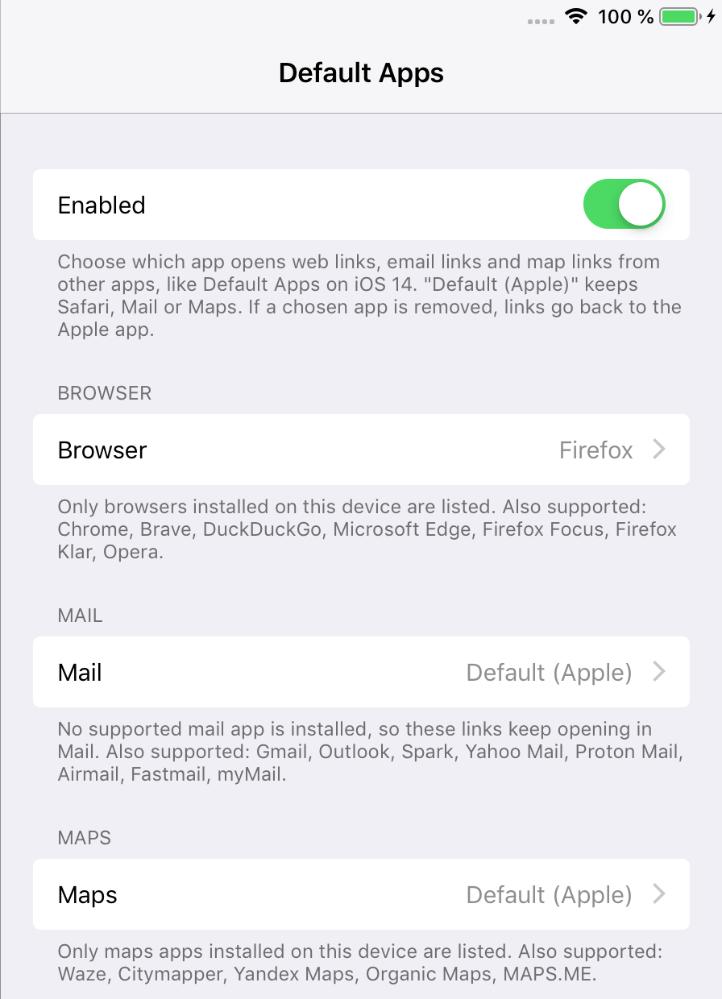
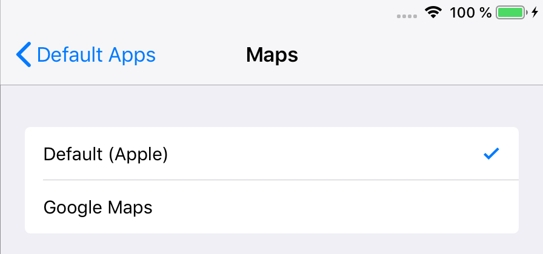
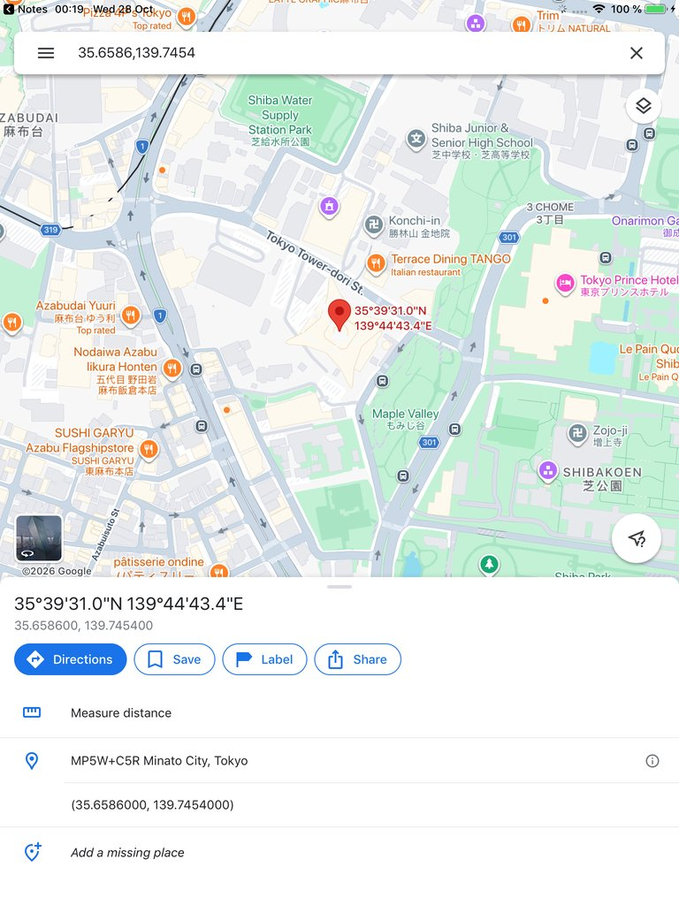
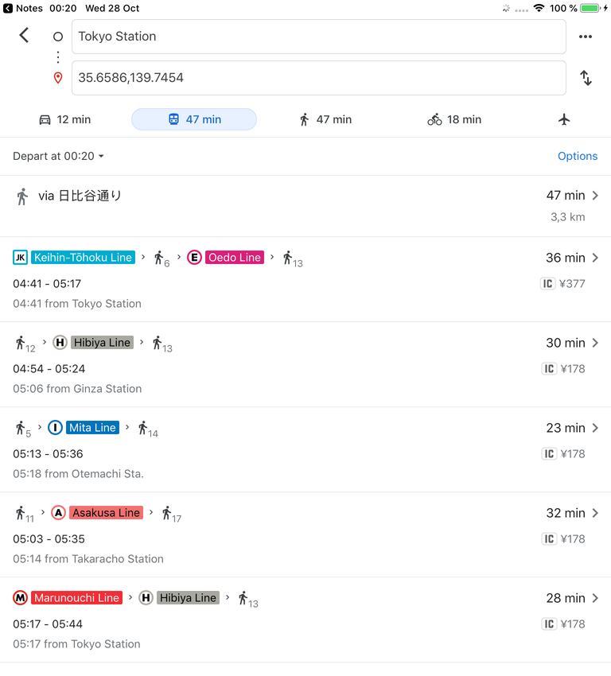
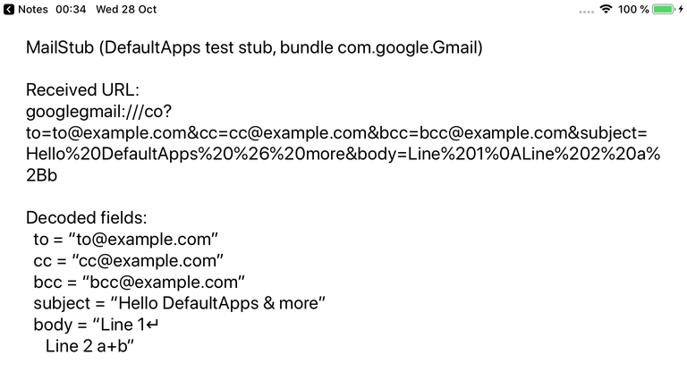

DefaultApps (iOS 12)
On iOS 12, web links always open in Safari, email links in Mail and map links in Maps. DefaultApps lets you pick other apps for all three, like Default Apps on iOS 14. Links that other apps open (Notes, Messages, Mail, Firefox and so on) then go to the apps you chose.
DefaultApps is the successor of DefaultBrowser. Installing it replaces DefaultBrowser and keeps your browser choice; Mail and Maps start on Default (Apple), so nothing else changes until you pick an app.
Safari, Mail and Maps still open normally from their icons. If a chosen app is removed, or a link can't be expressed in its format, the link opens in the Apple app as before.
Screenshots





Features
- Browsers: Firefox, Chrome, Brave, DuckDuckGo, Firefox Focus, Firefox Klar, Microsoft Edge, Opera
- Mail: Gmail, Outlook, Spark, Yahoo Mail, Proton Mail, Airmail, Fastmail, myMail, with To, Cc, Bcc, Subject and Body filled in
- Maps: Google Maps, Waze, Citymapper, Yandex Maps, Organic Maps, MAPS.ME, at the same place, search or route
- Email addresses tapped in Notes, Messages and other text open in the chosen mail app
- Only installed apps are offered, plus Default (Apple)
- Replaces DefaultBrowser and keeps its settings
Settings
Settings > Default Apps:
- Enabled: turns the tweak on or off. Applies right away.
- Browser, Mail, Maps: the app for each kind of link. Only installed apps are listed; the note under each list names the other supported apps.
Compatibility
- Tested on iPad mini 2, iOS 12.5.8 (checkra1n + odysseyra1n / libhooker)
- Expected to work on iOS 12.x, on iPhone as well as iPad (tested on iPad)
- The apps must be installed and still run on iOS 12
- Apps that show Apple's own mail sheet ("Share by Mail") still use Apple Mail, as on iOS 14
Changelog
Version 3.0.0
- First release as DefaultApps (successor of DefaultBrowser 2.0.1).
- Choose the mail app and the maps app, as well as the browser.
- Replaces DefaultBrowser and keeps your browser choice.
Information
| Version | 3.0.0 |
| Developer | itsAllexB |
| Size | 31 KB |
| License | GPL-3.0 |
| Source code | GitHub |
| Problems | Report an issue |
Unofficial. Not affiliated with or endorsed by Apple.